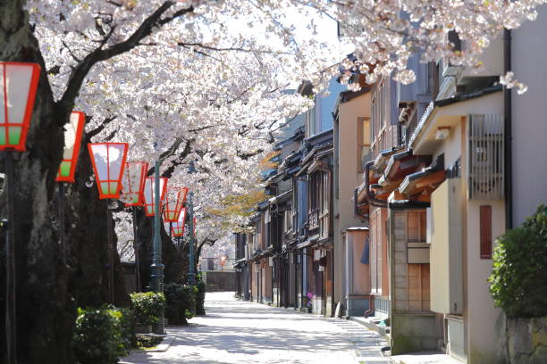

Kanazawa este un oraș istoric din Japonia, cunoscut pentru grădinile sale japoneze frumoase și cultura samurai.
Top 10 Atracții din Kanazawa:
- Grădina Kenroku-en
- Castelul Kanazawa
- Strada Higashi Chaya
- Muzeul de Artă Contemporană 21st Century Museum
- Templul Myoryuji (Templul Ninja)
- Parcul Nagamachi Samurai
- Muzeul de Artizanat
- Piata Omicho
- Grădina Gyokusen-en
- Plaja Noto